![]()
### Set pseudorandom number generator
set.seed(1233)
### Load packages
library(here) # relative path
## here() starts at /Users/zhonggr/Library/CloudStorage/OneDrive-Personal/quarto
library(tidyverse) # data manipulation and visualization
## ── Attaching core tidyverse packages ──────────────────────── tidyverse 2.0.0 ──
## ✔ dplyr 1.1.4 ✔ readr 2.1.5
## ✔ forcats 1.0.0 ✔ stringr 1.5.1
## ✔ ggplot2 3.5.1 ✔ tibble 3.2.1
## ✔ lubridate 1.9.3 ✔ tidyr 1.3.1
## ✔ purrr 1.0.2
## ── Conflicts ────────────────────────────────────────── tidyverse_conflicts() ──
## ✖ dplyr::filter() masks stats::filter()
## ✖ dplyr::lag() masks stats::lag()
## ℹ Use the conflicted package (<http://conflicted.r-lib.org/>) to force all conflicts to become errors
library(kernlab) # SVM methodology
##
## Attaching package: 'kernlab'
##
## The following object is masked from 'package:purrr':
##
## cross
##
## The following object is masked from 'package:ggplot2':
##
## alpha
library(e1071) # SVM methodology
library(ISLR) # contains example dataset "Khan"
library(RColorBrewer) # customized coloring of plotsThis context credited from here
Load package
Maximal margin classifier
### Construct sample data set- completely separated
x <- matrix(rnorm(20*2), ncol = 2)
y <- c(rep(-1, 10), rep(1, 10))
x[y==1, ] <- x[y == 1, ] + 3/2
dat <- data.frame(x = x, y = as.factor(y))
### Plot data
ggplot(dat, aes(x = x.2, y = x.1, color = y, shape = y)) +
geom_point(size = 2) +
scale_color_manual(values = c("#000000", "#FF0000")) +
theme(legend.position = "none")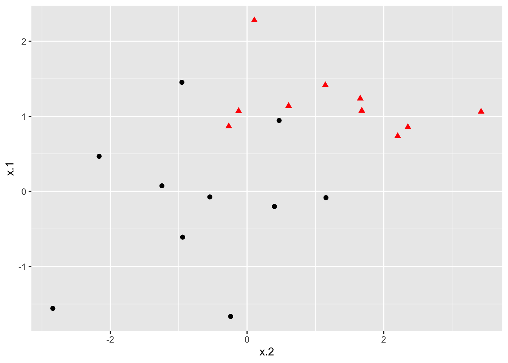
### Fit svm to data set
svmfit <- svm(y ~., data = dat, kernel = "linear", scale = FALSE)
### Plot results
plot(svmfit, dat)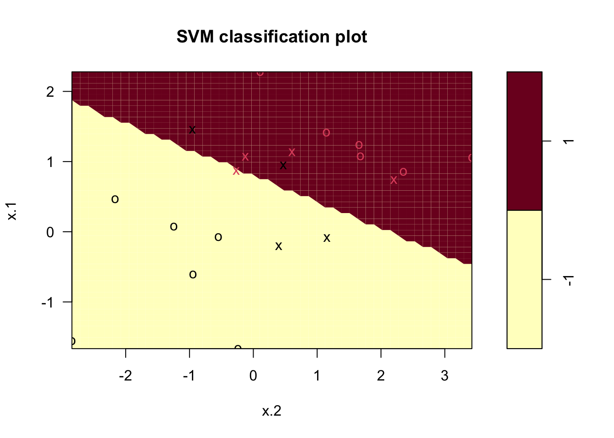
Support Vector Classifiers
### Construct sample data set - not completely separated
x <- matrix(rnorm(20*2), ncol = 2)
y <- c(rep(-1,10), rep(1,10))
x[y==1,] <- x[y==1,] + 1
dat <- data.frame(x=x, y=as.factor(y))
### Plot data
ggplot(data = dat, aes(x = x.2, y = x.1, color = y, shape = y)) +
geom_point(size = 2) +
scale_color_manual(values=c("#000000", "#FF0000")) +
theme(legend.position = "none")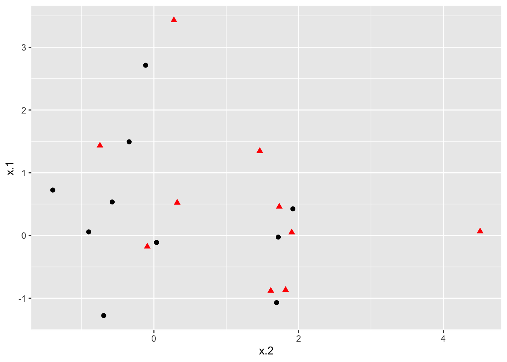
### Fit Support Vector Machine model to data set
svmfit <- svm(y~., data = dat, kernel = "linear", cost = 10)
# Plot Results
plot(svmfit, dat)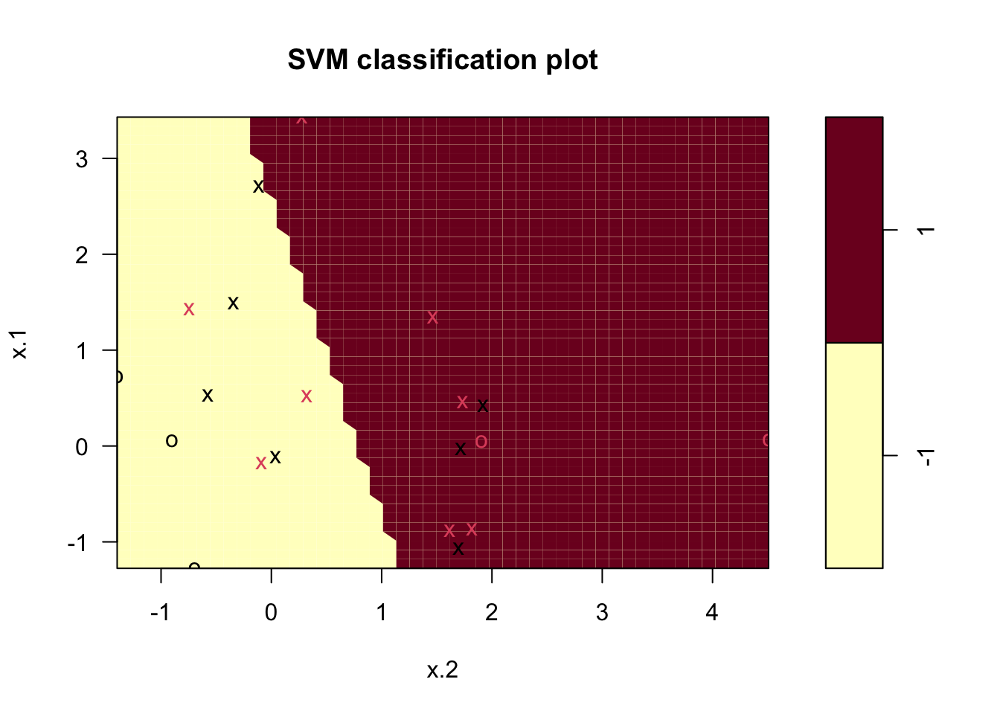
### Fit Support Vector Machine model to data set
kernfit <- ksvm(x,y, type = "C-svc", kernel = 'vanilladot', C = 100)
## Setting default kernel parameters
# Plot results
plot(kernfit, data = x)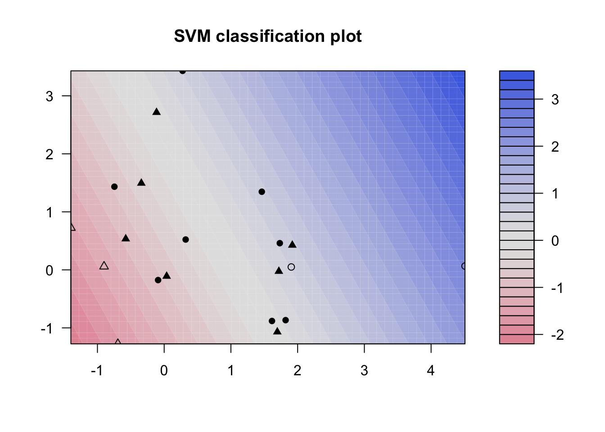
### Find optimal cost of misclassification
tune_out <- tune(svm, y~., data = dat, kernel = "linear",
ranges = list(cost = c(0.001, 0.01, 0.1, 1, 5, 10, 100)))
### Extract the best model
bestmod <- tune_out$best.model
bestmod
##
## Call:
## best.tune(METHOD = svm, train.x = y ~ ., data = dat, ranges = list(cost = c(0.001,
## 0.01, 0.1, 1, 5, 10, 100)), kernel = "linear")
##
##
## Parameters:
## SVM-Type: C-classification
## SVM-Kernel: linear
## cost: 5
##
## Number of Support Vectors: 15
### Create a table of misclassified observations
ypred <- predict(bestmod, dat)
misclass <- table(predict = ypred, truth = dat$y)
misclass
## truth
## predict -1 1
## -1 7 3
## 1 3 7Support Vector Machines
### Construct larger random data set
x <- matrix(rnorm(200*2), ncol = 2)
x[1:100,] <- x[1:100,] + 2.5
x[101:150,] <- x[101:150,] - 2.5
y <- c(rep(1,150), rep(2,50))
dat <- data.frame(x=x,y=as.factor(y))
# Plot data
ggplot(data = dat, aes(x = x.2, y = x.1, color = y, shape = y)) +
geom_point(size = 2) +
scale_color_manual(values=c("#000000", "#FF0000")) +
theme(legend.position = "none")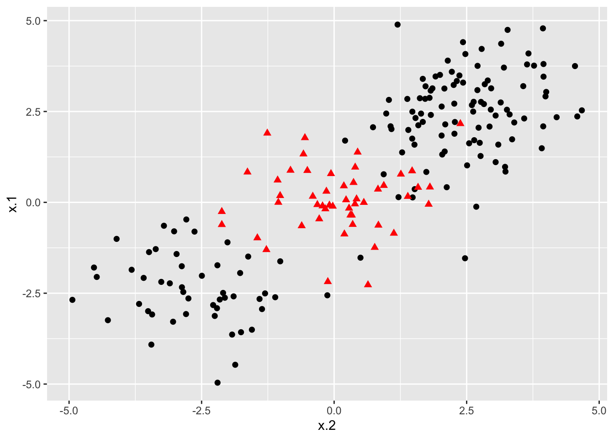
### Set pseudorandom number generator
set.seed(123)
### Sample training data and fit model
train <- base::sample(200,100, replace = FALSE)
svmfit <- svm(y~., data = dat[train,], kernel = "radial", gamma = 1, cost = 1)
# Plot classifier
plot(svmfit, dat)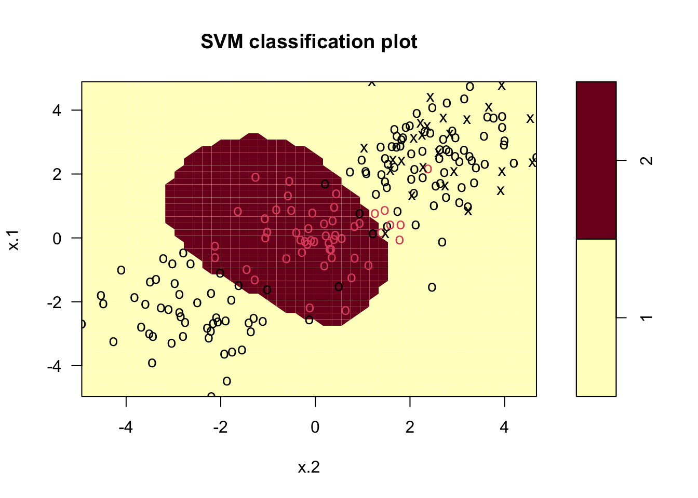
# Fit radial-based SVM in kernlab
kernfit <- ksvm(x[train,],y[train], type = "C-svc", kernel = 'rbfdot', C = 1, scaled = c())
# Plot training data
plot(kernfit, data = x[train,])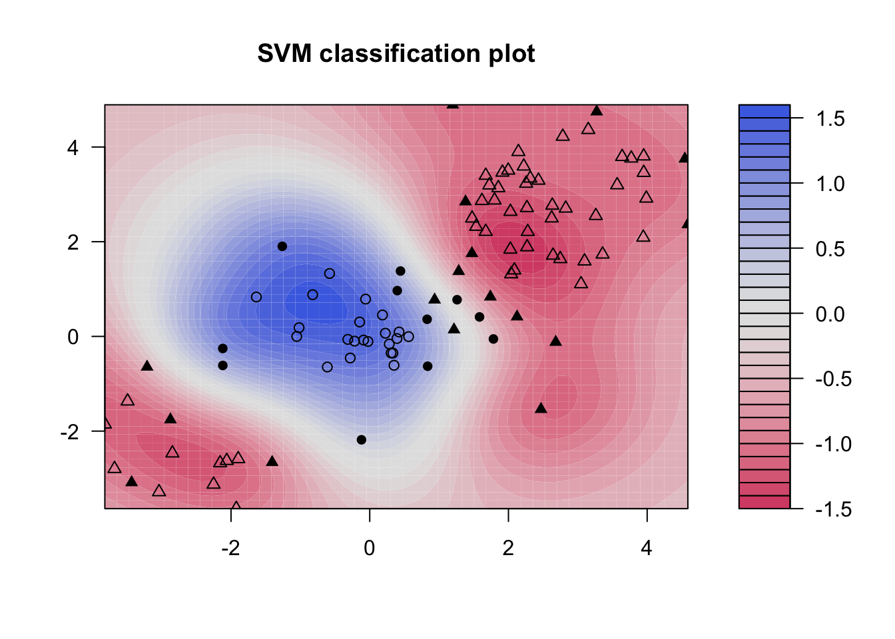
### Tune model to find optimal cost, gamma values
tune_out <- tune(svm, y~., data = dat[train,], kernel = "radial",
ranges = list(cost = c(0.1,1,10,100,1000),
gamma = c(0.5,1,2,3,4)))
### Show best model
tune_out$best.model
##
## Call:
## best.tune(METHOD = svm, train.x = y ~ ., data = dat[train, ], ranges = list(cost = c(0.1,
## 1, 10, 100, 1000), gamma = c(0.5, 1, 2, 3, 4)), kernel = "radial")
##
##
## Parameters:
## SVM-Type: C-classification
## SVM-Kernel: radial
## cost: 0.1
##
## Number of Support Vectors: 62
### Validate model performance
valid <- table(
true = dat[-train,"y"],
pred = predict(tune_out$best.model, newx = dat[-train,])
)
valid
## pred
## true 1 2
## 1 53 30
## 2 12 5SVMs for Multiple Classess
### Construct data set
x <- rbind(x, matrix(rnorm(50*2), ncol = 2))
y <- c(y, rep(0,50))
x[y==0,2] <- x[y==0,2] + 2.5
dat <- data.frame(x=x, y=as.factor(y))
### Plot data set
ggplot(data = dat, aes(x = x.2, y = x.1, color = y, shape = y)) +
geom_point(size = 2) +
scale_color_manual(values=c("#000000","#FF0000","#00BA00")) +
theme(legend.position = "none")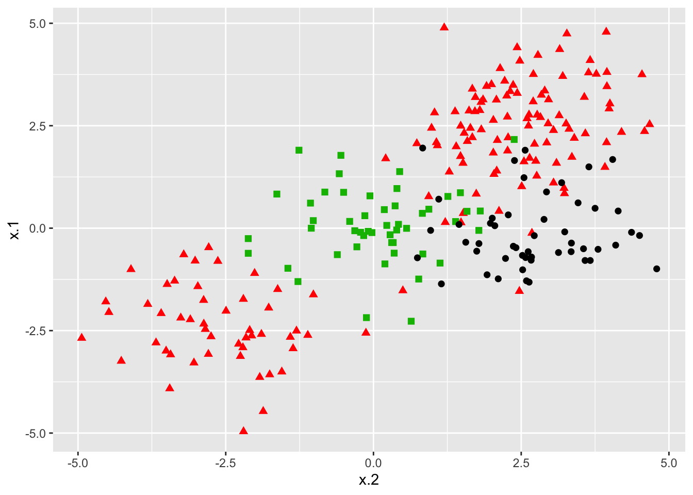
### Fit model
svmfit <- svm(y~., data = dat, kernel = "radial", cost = 10, gamma = 1)
### Plot results
plot(svmfit, dat)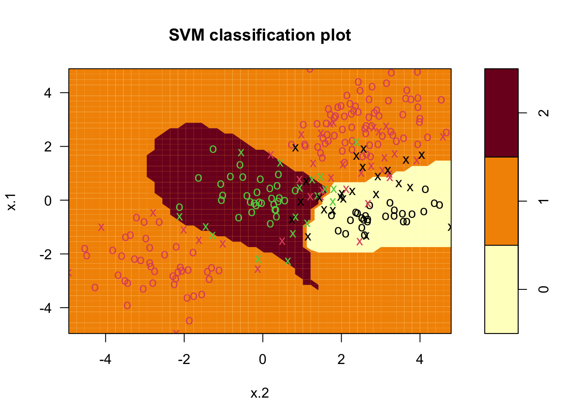
### Fit and plot
kernfit <- ksvm(
as.matrix(dat[,2:1]),dat$y, type = "C-svc",
kernel = 'rbfdot', C = 100, scaled = c()
)
### Create a fine grid of the feature space
x.1 <- seq(from = min(dat$x.1), to = max(dat$x.1), length = 100)
x.2 <- seq(from = min(dat$x.2), to = max(dat$x.2), length = 100)
x.grid <- expand.grid(x.2, x.1)
### Get class predictions over grid
pred <- predict(kernfit, newdata = x.grid)
### Plot the results
cols <- brewer.pal(3, "Set1")
plot(x.grid, pch = 19, col = adjustcolor(cols[pred], alpha.f = 0.05))
classes <- matrix(pred, nrow = 100, ncol = 100)
contour(
x = x.2, y = x.1, z = classes, levels = 1:3,
labels = "", add = TRUE
)
points(dat[, 2:1], pch = 19, col = cols[predict(kernfit)])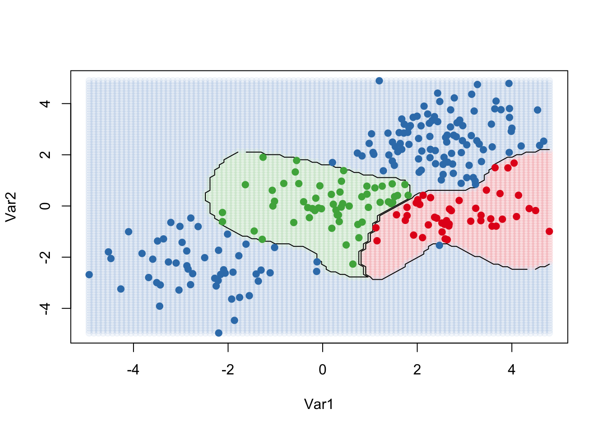
Application
### Fit model
dat <- data.frame(x = Khan$xtrain, y=as.factor(Khan$ytrain))
out <- svm(y~., data = dat, kernel = "linear", cost=10)
out
##
## Call:
## svm(formula = y ~ ., data = dat, kernel = "linear", cost = 10)
##
##
## Parameters:
## SVM-Type: C-classification
## SVM-Kernel: linear
## cost: 10
##
## Number of Support Vectors: 58### Check model performance on training set
table(out$fitted, dat$y)
##
## 1 2 3 4
## 1 8 0 0 0
## 2 0 23 0 0
## 3 0 0 12 0
## 4 0 0 0 20### validate model performance
dat.te <- data.frame(x=Khan$xtest, y=as.factor(Khan$ytest))
pred.te <- predict(out, newdata=dat.te)
table(pred.te, dat.te$y)
##
## pred.te 1 2 3 4
## 1 3 0 0 0
## 2 0 6 2 0
## 3 0 0 4 0
## 4 0 0 0 5